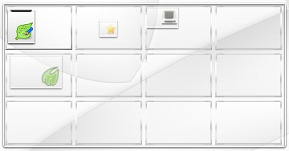
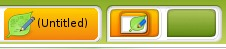
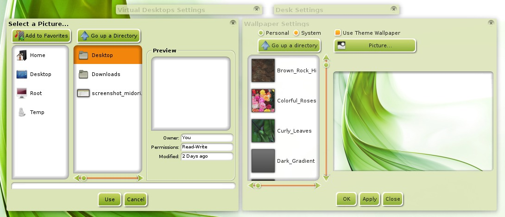

[click on any image to enlarge]
Virtual Desktops (sometimes called "workspaces") are utilized in nearly all Window Managers (at least those for Linux/Unix systems). Virtual Desktops allow you to keep your work organized with the ability to have different programs running on different desktops.This may seem like an unusual and unnecessary feature at first, but, rest assured, once you get into the habit of using them, it is very hard to go back to using just a single desktop.
Switching Virtual Desktops
Enlightenment (E17) provides several ways to switch among Virtual Desktops:
- If you have the Pager Gadget loaded on either the desktop or a shelf, simply click on the graphic of the Desktop you wish to be in.
- Use the keyboard shortcut: Ctrl+Alt + <ArrowKey> in the direction you wish to move.
- Choose your desired desktop via Main Menu>Desktop>Virtual.
Seeing your Virtual Desktops
For a graphical, clickable representation of your multiple workspaces, Enlightenment provides the Pager Gadget.
Depending on which Profile you are using or your personal customizations, the Pager can appear in different ways: different number of rows and columns of thumbnail representations of the desktops, and either on the desktop or on a Shelf.
Here is a screenshot of the Pager on the desktop in the Fancy Profile:
{kind=link}
And this is how the Pager appears in a Shelf in the Laptop Profile.
{kind=link}
You can switch between Virtual Desktops simply by clicking on its thumbnail.
In each screenshot, notice that there are graphics representing the open applications on that particular desktop, with the active window being opaque and non-active being semi-transparent.
In both screenshots, Leafpad is the active window and the only window open on the first desktop(0, 0).
In the Fancy Profile screenshot of the Pager Gadget, an Enlightenment dialog, Terminology (e17-flavored terminal), and Midori are open in the second(1, 0), third(2, 0), and fifth(0, 2) desktops, respectively.
*Note: Some
Themes offer the option to incorporate each desktop's wallpaper into their respective thumbnail representation.
It can be done through the Pager Gadget's settings.
**Note:
The default naming scheme for desktops is as follows:
Desktop [row],[column] and both rows and columns
begin numbering at 0.
Moving Applications Between Desktops
In another display of E17's versatility, there is more than one way to move an application between Virtual Desktops.
The first is to right-click anywhere on the title bar of the window you would like to move, scroll down to Move To and select the desktop in which you wish it to be moved.
The second method is to left-click and drag the small icon in the top-left of the window, then drag-and-drop it in the Pager onto the Virtual Desktop thumbnail you want it to be placed in.
*Note: If you find you've moved a window to another Virtual Desktop and it is
in a position that is partially off the screen to where you can't
grab the title bar to reposition the window, there is a simple fix:
just hold down the Alt key then click-and-hold
anywhere on the visible part of the window. You can then drag the
window to where you would like it. Alternatively, you can go to
Main Menu>Windows and click Cleanup Windows.
Virtual Desktop Settings
As with almost everything in E17, you are not stuck with the Virtual Desktop setup that appeared at installation. In the Fancy Profile illustrated above, the Pager has four columns and three rows, which may be too many for some users. The Laptop Profile has only a single row, which is nice but limited. No worries. Both can be changed to meet your needs and wants!
To change the layout & appearance use the Virtual Desktops
Settings dialog. This can be accessed in two ways:
1) Right-click on the Pager and select Virtual Desktop Settings.
2) Main Menu>Settings>All>Screen>Virtual Desktops.

In the Virtual Desktops Settings window that appears, you can adjust the number of rows and columns with the vertical and horizontal sliders respectively.
Below this are two checkboxes:
-Flip when dragging objects to the screen edge is
currently disabled and has no effect whether checked or not.
-Wrap desktops around when flipping controls whether
the system will switch back to the first desktop after reaching
the last, or vice-versa.
Click on any of the desktops and a Desk Settings window will pop up. In this window, not only can you change the name of the Virtual Desktop, but you can also choose any image in your computer as the background for any particular Virtual Desktop by clicking on the Set button. In the Wallpaper Settings window that pops up, you can select a system wallpaper or you can click on the Picture button to open the Select a Picture dialogue and select your own background:
{kind=link}
Navigate to the folder with your background picture for this Virtual Desktop, select it, and click the OK button. Repeat this sequence for all of your Virtual Desktops if you want alternate wallpapers per desktop.